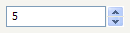

| Version: 2.9.4 |
#include </home/zeitlin/src/wx/github/interface/wx/spinctrl.h>
 Inheritance diagram for wxSpinCtrl:
Inheritance diagram for wxSpinCtrl:wxSpinCtrl combines wxTextCtrl and wxSpinButton in one control.
This class supports the following styles:
wxEVT_COMMAND_TEXT_ENTER events. Using this style will prevent the user from using the Enter key for dialog navigation (e.g. activating the default button in the dialog) under MSW. The following event handler macros redirect the events to member function handlers 'func' with prototypes like:
Event macros for events emitted by this class:
You may also use the wxSpinButton event macros, however the corresponding events will not be generated under all platforms. Finally, if the user modifies the text in the edit part of the spin control directly, the EVT_TEXT is generated, like for the wxTextCtrl. When the use enters text into the text area, the text is not validated until the control loses focus (e.g. by using the TAB key). The value is then adjusted to the range and a wxSpinEvent sent then if the value is different from the last value sent.
|  |  |  |
| wxMSW appearance | wxGTK appearance | wxMac appearance |
Public Member Functions | |
| wxSpinCtrl () | |
| Default constructor. | |
| wxSpinCtrl (wxWindow *parent, wxWindowID id=wxID_ANY, const wxString &value=wxEmptyString, const wxPoint &pos=wxDefaultPosition, const wxSize &size=wxDefaultSize, long style=wxSP_ARROW_KEYS, int min=0, int max=100, int initial=0, const wxString &name="wxSpinCtrl") | |
| Constructor, creating and showing a spin control. | |
| bool | Create (wxWindow *parent, wxWindowID id=wxID_ANY, const wxString &value=wxEmptyString, const wxPoint &pos=wxDefaultPosition, const wxSize &size=wxDefaultSize, long style=wxSP_ARROW_KEYS, int min=0, int max=100, int initial=0, const wxString &name="wxSpinCtrl") |
| Creation function called by the spin control constructor. | |
| int | GetMax () const |
| Gets maximal allowable value. | |
| int | GetMin () const |
| Gets minimal allowable value. | |
| int | GetValue () const |
| Gets the value of the spin control. | |
| void | SetRange (int minVal, int maxVal) |
| Sets range of allowable values. | |
| virtual void | SetSelection (long from, long to) |
| Select the text in the text part of the control between positions from (inclusive) and to (exclusive). | |
| virtual void | SetValue (const wxString &text) |
| Sets the value of the spin control. | |
| void | SetValue (int value) |
| Sets the value of the spin control. | |
| wxSpinCtrl::wxSpinCtrl | ( | ) |
Default constructor.
| wxSpinCtrl::wxSpinCtrl | ( | wxWindow * | parent, |
| wxWindowID | id = wxID_ANY, |
||
| const wxString & | value = wxEmptyString, |
||
| const wxPoint & | pos = wxDefaultPosition, |
||
| const wxSize & | size = wxDefaultSize, |
||
| long | style = wxSP_ARROW_KEYS, |
||
| int | min = 0, |
||
| int | max = 100, |
||
| int | initial = 0, |
||
| const wxString & | name = "wxSpinCtrl" |
||
| ) |
Constructor, creating and showing a spin control.
If value is non-empty, it will be shown in the text entry part of the control and if it has numeric value, the initial numeric value of the control, as returned by GetValue() will also be determined by it instead of by initial. Hence, it only makes sense to specify initial if value is an empty string or is not convertible to a number, otherwise initial is simply ignored and the number specified by value is used.
| parent | Parent window. Must not be NULL. |
| value | Default value (as text). |
| id | Window identifier. The value wxID_ANY indicates a default value. |
| pos | Window position. If wxDefaultPosition is specified then a default position is chosen. |
| size | Window size. If wxDefaultSize is specified then a default size is chosen. |
| style | Window style. See wxSpinButton. |
| min | Minimal value. |
| max | Maximal value. |
| initial | Initial value. |
| name | Window name. |
| bool wxSpinCtrl::Create | ( | wxWindow * | parent, |
| wxWindowID | id = wxID_ANY, |
||
| const wxString & | value = wxEmptyString, |
||
| const wxPoint & | pos = wxDefaultPosition, |
||
| const wxSize & | size = wxDefaultSize, |
||
| long | style = wxSP_ARROW_KEYS, |
||
| int | min = 0, |
||
| int | max = 100, |
||
| int | initial = 0, |
||
| const wxString & | name = "wxSpinCtrl" |
||
| ) |
Creation function called by the spin control constructor.
See wxSpinCtrl() for details.
| int wxSpinCtrl::GetMax | ( | ) | const |
Gets maximal allowable value.
| int wxSpinCtrl::GetMin | ( | ) | const |
Gets minimal allowable value.
| int wxSpinCtrl::GetValue | ( | ) | const |
Gets the value of the spin control.
| void wxSpinCtrl::SetRange | ( | int | minVal, |
| int | maxVal | ||
| ) |
Sets range of allowable values.
| virtual void wxSpinCtrl::SetSelection | ( | long | from, |
| long | to | ||
| ) | [virtual] |
Select the text in the text part of the control between positions from (inclusive) and to (exclusive).
This is similar to wxTextCtrl::SetSelection().
| void wxSpinCtrl::SetValue | ( | int | value | ) |
Sets the value of the spin control.
| virtual void wxSpinCtrl::SetValue | ( | const wxString & | text | ) | [virtual] |
Sets the value of the spin control.
Use the variant using int instead.